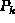
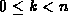
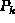
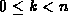
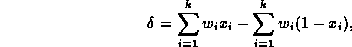
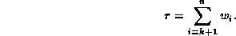
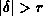
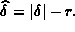

Data Structures and Algorithms
with Object-Oriented Design Patterns in Java
Data Structures and Algorithms
with Object-Oriented Design Patterns in JavaThe depth-first and breadth-first backtracking algorithms described in the preceding sections both naıvely traverse the entire solution space. However, sometimes we can determine that a given node in the solution space does not lead to the optimal solution--either because the given solution and all its successors are infeasible or because we have already found a solution that is guaranteed to be better than any successor of the given solution. In such cases, the given node and its successors need not be considered. In effect, we can prune the solution tree, thereby reducing the number of solutions to be considered.
For example, consider the scales balancing problem
described in Section  .
Consider a partial solution  in which
we have placed k weights onto the pans ( ) and,
therefore, n-k weights remain to be placed.
The difference between the weights of the left and right pans is given by
.
Consider a partial solution  in which
we have placed k weights onto the pans ( ) and,
therefore, n-k weights remain to be placed.
The difference between the weights of the left and right pans is given by

and the sum of the weights still to be placed is

Suppose that . That is, the total weight remaining is less than the difference between the weights in the two pans. Then, the best possible solution that we can obtain without changing the positions of the weights that have already been placed is  The quantity is a lower bound on the value of the objective function for all the solutions in the solution tree below the given partial solution .
In general, during the traversal of the solution space we may have already found a complete, feasible solution for which the objective function is less than . In that case, there is no point in considering any of the solutions below . That is, we can prune the subtree rooted at node from the solution tree. A backtracking algorithm that prunes the search space in this manner is called a branch-and-bound algorithm.
 Copyright © 1998 by Bruno R. Preiss, P.Eng. All rights reserved.
Copyright © 1998 by Bruno R. Preiss, P.Eng. All rights reserved.